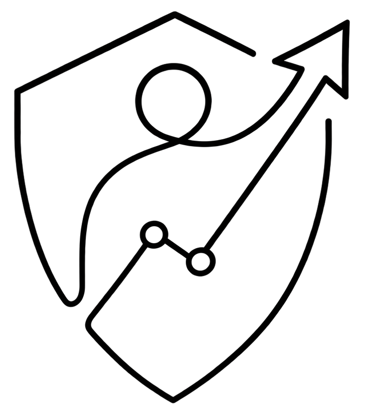

01 / START
Choose a direction
Find the cybersecurity track that fits the work you want to explore.
InternShield is a structured learning and internship platform for people ready to grow real cybersecurity capability through focused practice, projects, and evidence of their work.

Turn key concepts into a reliable base for hands-on work.
Move from first principles to presentable work through a clear, trackable sequence designed around learning by doing.
Find the cybersecurity track that fits the work you want to explore.
Understand the concepts, vocabulary, and methods behind secure systems.
Turn theory into small, focused exercises and practical assignments.
Build work that gives your skills a concrete, shareable form.
Keep your reports, outputs, and milestones visible as you progress.
Leave with a stronger foundation for your next learning or career move.
Every domain offers a different lens on how systems are attacked, protected, and investigated.
Learn the responsible fundamentals of reconnaissance, vulnerability analysis, penetration testing, and web security.
EXPLORE THE TRACK →Study systems, network safeguards, threat intelligence, monitoring, and the practical habits of resilience.
EXPLORE THE TRACK →Discover the fundamentals of digital investigation, evidence handling, incident response, and analysis.
EXPLORE THE TRACK →The weekly flow keeps expectations clear and lets every learner see the work they have built over time.
Your next set of activities and task instructions arrives for the week ahead.
→Work through the assignment, build your project, and learn at a steady pace.
→Share the required work, links, notes, and progress from the week.
→Keep your previous work visible and progress into the next part of the journey.
This acknowledges the completion of a structured learning journey in cybersecurity.
VERIFIABLE WORK · MEANINGFUL PROGRESSGood work deserves more than a memory. InternShield helps you keep a coherent record of the learning, assignments, projects, and milestones you complete.
Explore the platform, choose your direction, and move at a pace that makes room for real practice.
InternShield is designed for learners who want practical exposure to cybersecurity through guided work, projects, and responsible learning across different domains.
The experience is organized around a weekly rhythm: receive assignments, work through them during the week, capture your evidence, and submit your progress.
The platform presents learning paths in offensive security, defensive security, and forensic security, so you can begin with the field that matches your curiosity.
Yes. Use the verification portal to check an issued InternShield certificate and its associated record.